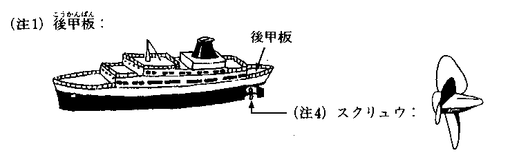

（1）
経緯
問1 裁判の経緯を見ていると、両者に譲歩の姿勢は全くなく、争いは泥沼の様相を呈している。
問2 機械が故障するとすぐ廃棄物扱いをする近年の悪癖を解消するには、国民の生活意識を根底から問い直す必要がある。
問3 八月半ば、高原には早くも秋の気配が漂い始め、色とりどりの草花が夏の名残を惜しんでいた。
（例）あの先生の講義はたいへんおもしろい。
例の文の下線のことばは、ひらがなで「こうぎ」と書きます。1～4のことばはそれぞれ、1は「ごうぎ」、2は「こうき」、3は「こうぎ」、4は「こうじ」と書きます。例の文の「こうぎ（講義）」と、3の「こうぎ（抗議）」はひらがなで同じ書き方ですから、正解は3です。
| （例） | ① | ② | ● | ④ |
問1 彼の行為は規則いはんだと一時ひなんされたが、じじょう調査の結果、むしろせいとうな行為であるとみとめられた。
問2 だいきぼなさいがいにそくざに対応できるたいせいがけんとうされている。
問3 夜更けのはまべにひとかげはなく、ただ、おきのぎょせんがあわい月の光にかすかに見えるだけであった。
（例）工場の機械のはいちを変えるため、一週間操業を停止する。
例の文の下線のことばは「配置」と書きます。1～4のことばはそれぞれ、1は「拝見」、2は「心配」、3は「排水」、4は「乾杯」と書きます。例の文の「配置」の「はい」と、2の「心配」の「ぱい」は同じ漢字ですから、正解は2です。
| （例） | ① | ● | ③ | ④ |
わたしももう48歳で「お若いですね」とお世辞を言われるような年頃になった。もちろん、そのようなお世辞はたいてい聞き流すが、ときには「若くないよ。昔なら人生50年、もうすぐ終わりだ」と言い返すこともある。そのようなことを言われはじめるのは、人びとにわたしが老人と見られはじめたということに過ぎないからである。
それは、自分が自分を見る場合にも言えることで、「自分は（ ② ）」と思いはじめたら、それは（ ③ ）しるしなのである。実際、若い人は「自分はまだ若い」なんて思っていないし、むしろ「もう歳だ」（注1）というようなことを言いたがる。それが老いはじめると「自分は若い」と言い出すわけで、たいていの老人は自分は実際の年齢より若く見えるし、たとえ若く見えなくても本当は精神的にも肉体的にも若いと信じている。自分は実際の年齢よりも老けていると思っている老人にお目にかかったことはまだない。
たしかに老化の進み具合は人によって異なり、年齢の進み具合と必ずしも一致しないが、ほとんどの老人が実際の年齢より若いということは論理的におかしな話で、それなら、実際の年齢通りに老けている老人のほうが例外だということになってしまう。そんな馬鹿なことはない。老人がそう思っているのが希望的観測に過ぎないことは明らかで、自分の状態よりさらに老けている状態を勝手に「年齢相応」と決め込み、それと自分を比較しているに過ぎない。
つまり、老人になればなるほど自分は若いと思いたがるわけで、したがってこのことから当人の老化の程度を判定できるのではないかと私は考えている。かりに老化指数（注2）という言葉を使えば、（老化指数）＝（暦年齢（注3））－（当人が思っている年齢）という方程式が成り立つ。たとえば15歳の人が自分はもう一人前のおとなで、20歳で通ると思っていれば老化指数はマイナス5、20歳の人が自分は20歳程度と思っていれば老化指数は0、40歳の人が35歳程度と思っていれば5、60歳の人が50歳程度だと思っていれば10である。ここに自分は50歳と変わらないと思っている70歳の人と、自分は60歳ぐらいには見えると思っている同じく70歳の人がいるとすれば、老化指数は前者が（ ⑦ ）、後者が（ ⑧ ）で、前者のほうが二倍もより老化しているわけである。
「近頃の若者は」なんて言うと老いの証拠と笑われるかもしれないが、近頃の若者には、はたちを過ぎたばかりなのにもう「おじん」（注4）または「おばん」（注5）になったと嘆き、10代に見られたがる者がいるが、22歳の者が自分は18歳に見えると思っているとすれば老化指数は20代にしてすでに4である。近ごろ、そういう若者が多いということは、一方では若者の幼児化が言われてはいるが、他方では早くから精神的に老け込んでいる証拠ではなかろうか。
（岸田秀『不惑の雑考』文藝春秋による）
（注1）「もう歳だ」：「もう老人だ」
（注2）老化指数：老化の程度を示す数字
（注3）暦年齢：実際の年齢
（注4）おじん：おじさん
（注5）おばん：おばさん
重苦しいほどむし暑い晩だった。
空には星ひとつなく、海は不気味に静まりかえっている。
私はいつものように、後甲板（注1）の方へ歩いていった。後甲板には先客が一人いた。デッキの手すりにもたれ、その男はしきりに暗い海をのぞきこんでいる。
「今晩は」
と私は声をかけた。
ふりかえった男の顔は骸骨のように痩せ細っていた（注2）。眼が落ちくぼみ、顔色がひどく蒼白い。
「今晩は……」
男は低くしゃがれた声でそう云うと、薄い唇をゆがめて笑った。
私は男の隣りに歩み寄って、同じように暗い海をみつめた。海はいつでも私をもの哀しい気分にさせる。海の中にいる誰かが呼んでいるような……。
「いやな晩ですな」
と私は云った。
「そうですか……」
男は骨ばった長い指で髪の毛をかきあげた。
「ぼくはこんな晩の方が好きなんですよ。なんとなく不気味で面白いじゃありませんか」
私は変った男だなと思った。私が黙っていると、彼が問いかけてきた。
「この船に幽霊が出るという噂があるんですが、知っていますか？」
「幽霊？」
と私は訊き返した。
「ええ。やはりぼくたちみたいな客の一人が、自殺したことがあるんだそうです。こんなふうに重苦しくて、風のない晩だったと云いますよ。その男はしばらく海を眺めていて、ふいに飛びこんだんです。ちょうどここから、今、ぼくらがこうしているところからね……」
男は私の顔をのぞきこむようにして、にやりと笑った。
「あがった屍体（注3）は、右の腕がなかったそうです。スクリュウ（注4）に切りとられたのかもしれませんね」
二人は暗い海にほの白く泡だっているスクリュウのあとをしばらくみつめた。
「それで、その幽霊が出るんですね」
私の声は少しふるえているような気がした。
「ええ、自分の失った右腕をさがしているのだという噂です。こういうふうにむしむしして、海が妙に静まりかえった晩、男が一人でその海を眺めている。そして、しばらくするとふっと消えてしまうのです」
男は自分自身をかき消すようなしぐさをした。
「なぜ、その男が自殺したのか知っていますか？」
と私は訊いた。
「（ ④ ）、なんの原因もないのです。金に困っているわけでもなく、失恋したわけでもなかった……」
眉をひそめ、男は遠い所を見る眼つきで海をみつめた。
「多分……」
と云って男は口ごもった。
「多分、この海を見ているうちに、なにもかもいやになったのでしょうね。そして、ひきずりこまれるように、飛びこんだのでしょう。ぼくには、その気持がわかるな。こうしていると、なにもかも忘れて、この海の底で眠りたくなる。あなたは、そう思いませんか？」
私も、海をみつめた。海は暗く、静かに私を呼びかけている（注5）ように思えた。

（注2）骸骨のように痩せ細った：非常に痩せた
（注3）屍体：死体
（注5）私を呼びかけている：通常は「私に呼びかけている」
◎ここまで読んで、次の問1から問4に答えなさい。
◎上の文章（4～5ページの文章）の後には、次の文章が続きます。最後まで読んで、下の問5、問6に答えなさい。
「そうなのです」
ため息を吐きながら、私は云った。
「それで、あの晩私は飛びこんだのです」
私の右腕がないのに男が気づいたのは、その時だった。
（生島治郎「暗い海暗い声」『奇妙な味の小説』立風書房による）
（1）言葉は時代と共に変る。今の若い女性の中には平気で男言葉で話す人も多い。男性が語尾に「よね」をつけて話したり、女言葉に近づいてもいる。男女の言葉の差は昔に較べれば格段に少なくなっている。今の時代の男女の生き方を象徴しているのでもあるだろう。そんな中で「男言葉」「女言葉」を守ろうというのではない。時代の流れに任せてもなお自然に残る言葉は残るのではないかと思うのだ。口に出す時ちょっとした抵抗感があるかないかという形で、その感覚を大切にしたい。それが日本語の中の文化であり味わいであるかもしれないと思うから。
（山根基世「日本語の味わい」『国文学 解釈と鑑賞』1991年7月号 至文堂による）
この文章で、筆者はどのようなことを言おうとしていると考えられるか。
言葉の男女差は
（2）旅行に出かける理由はいろいろありますが、一番の喜びは、旅先での解放感ではないでしょうか。この解放感は、自分を知っている人が誰もいないという心理に起因します。つまり、自分が恥をかいたり、失敗したり、あるいは、破廉恥なこと（注1）をしても、そのことで後々困ることは起こらないと思うからです。
旅先にいる私は、家庭や職場の私ではなくて、どこの誰だかわからないような匿名（注2）性をもった、一人の人間なのです。
このように、自分を見つめることを忘れ、他人から批判される懸念（注3）も薄れ、恥とか罪とかによる自己規制も弱まり、いつもならしないような行動をとることを、没個性化現象と言います。こうした没個性化は、大勢の見知らぬ人々の中にいる時や群衆の中にいる時、自分が誰だか人にわからないような時に現われます。
（渋谷昌三『心理おもしろ実験ノート』三笠書房による）
（注1）破廉恥なこと：道徳的にしてはならないこと
（注2）匿名：名前を隠すこと
（注3）懸念：心配
（3）いうまでもなく、木々の葉の緑を見るとき、その葉には緑“色”という“物”がついているのではない。ある一定の状態の光の中で、その葉を前にしてもつ視覚的な体験のある種のあり方を、人は緑という“色”を見たと表現しているのである。
目の前には“形”と“動き”があり、そこに人は“色”を見る。“色”は人の（ ① ）にあるのではなくて、人の側にあるものなのだ。“色”とは、この地上で人が外界に対してもつ視覚的な対応の仕方の一例であり、それは人の内側で起こる出来事の一例なのである。それに対し、“形”や“動き”となると、そのあり方の把握は人の（ ② ）でのことであるとはいえ、基本的には人の（ ③ ）で起こっている出来事であるといえるだろう。
（西江雅之「色をあらわす言葉」『色の博物誌』朝日新聞社による）
（4）次の文章は大学進学率に関する、1965年から1990年までの5年ごとの調査結果について述べたものです。
大学への進学率は全体で見ると、75年までは急激に伸びた。しかし、75年を境にして伸びは止まり、ほぼ一定の状態がこの15年ほど続いている。
男女別に見てみると、75年以降、男子の進学率はやや下降する傾向を示しているのに対し、女子の進学率はその伸びは鈍くなったが少しずつ上昇を続けており、90年には男子の進学率より高くなった。
（グラフ：文部省『学校基本調査報告書』による）
（5）ある言語が豊かさを獲得するのは、小さな村落や島に、純粋に保存されることによってではなく、できるだけ多くの異なる背景をもった人たちによって、できるだけ多くの異なる場面で、多様な目的のために用いられることによってである。そうでなければ、ことばは［ ］。
（田中克彦『国家語をこえて』筑摩書房による）
（6）税に関する本を読んでも、最近の世界の税制改革を調べても、望ましい税の条件としてまっさきにあげられているのが負担の公平です。「公平」とは、とりあえず、国民がそれならば負担してもよい、負担するのもやむをえないと考える税負担の決めかたと理解しておいてください。それでは、なぜ公平なのか。納税が義務、つまり強制だからです。寄付のように自発的な負担なら、負担の決めかたが不公平だと思えば寄付を断ればよいのです。したがって、公平だと思う人だけが頼みに応じて負担する寄付はつねに公平です。ところが、強制的な税の場合はそうはいきません。負担の決めかたが不公平だと思っても、納税は拒否できないのです。
（宮島洋『税のしくみ』岩波書店による）
「なぜ公平なのか」というのは、別の表現で言うと、この場合、次のどれに近いか。
税負担が
（7）自然現象を説明する主な仕方に、万物を生き物になぞらえて説明するやり方と、すべてを機械になぞらえて説明するやり方の二種類がある。前者を有機体論、後者を機械論という。科学の発達を大ざっぱにいえば、昔は自然を、世界を生き物としてとらえる考え方が（ ① ）が、近代、17世紀からとくに万物を機械論で説明する機械論的自然観が定着し、そのなかから近代科学を生み出してきて、今日にいたっている。動物や人間の身体も、機械のように見なしてかなりうまく説明がつくのである。
しかし昔はそうではなかった。自然万物を生きとし生けるものと見なした。生き物の方が無機物よりずっと親近感があったからである。生きて活発に動くものの方が、鈍で動かないものよりずっと印象的だったからである。
（中山茂『宇宙の科学史』日本放送出版協会による）
②「昔はそうではなかった」とあるが、どういうことか。
昔は
「これが最近書いた本なんですが、あなたにさしあげますから、どうぞお読みください。」
「はい、＿＿いただきます。」
「先生の奥様はどの方かご存じですか。」
「あそこの＿＿を召していらっしゃるご婦人です。」